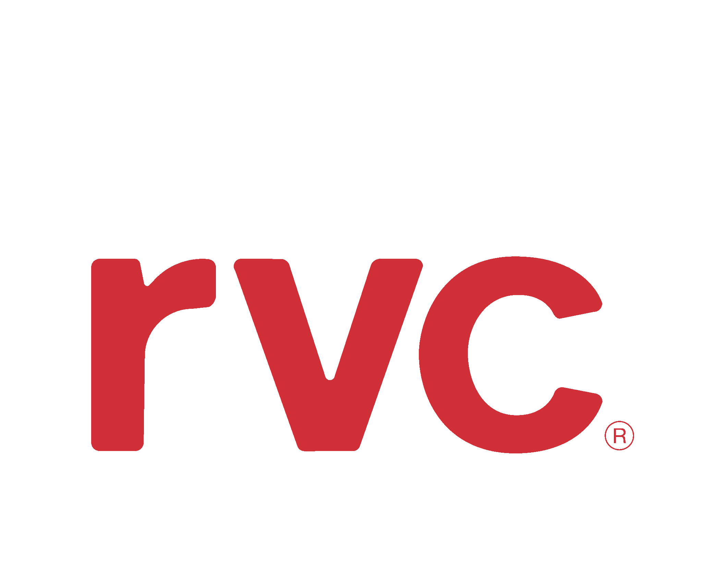

Control de Avances
RVC Constructora ·
v4.72
⬆ Importar
+ Nuevo Proyecto
Sincronizado
—
Proyectos
Recientes
A–Z
Zona
No hay proyectos aún.
Crea uno para comenzar.
+ Nuevo Proyecto
Nuevo Proyecto
Control de Avances ·
v4.72
Cancelar
Sincronizado
—
Paso 1 de 4
1
2
3
4
—
← Inicio
Sincronizado
☰
Proyecto
⚙ Configurar
Acciones
📥 Importar Excel
📊 Exportar Excel
📂 Cargar respaldo JSON
📈 Exportar historial semanal
↺ Resetear avances
—
◀
📊
Gráficos
🏗
Obra Gruesa
▶
Consolidado
Piso OG
🎨
Terminaciones
▶
Consolidado
Registro avance
📷
Informe fotográfico
Próximamente
📷 Informe fotográfico llega en una próxima etapa.
Confirmar
✕
¿Cuál es tu nombre?
Tu nombre se guardará en este dispositivo para identificarte cuando trabajes en equipo.
💾